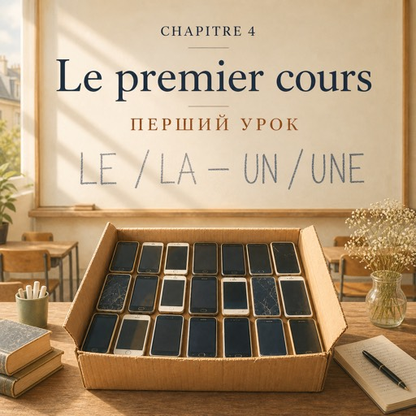

0:00
2:22
Натисніть речення, щоб почути його окремо.
Щоб слухати з підсвіткою — відкрийте сторінку в браузері.
Le mardi 2 septembre, dix-huit heures trente — вівторок, 2 вересня, о пів на сьому вечора
Salle quatre. Vingt chaises, vingt personnes, douze pays.
Аудиторія чотири. Двадцять стільців, двадцять людей, дванадцять країн.
Natalia arrive à dix-huit heures vingt.
Наталя приходить о вісімнадцятій двадцять.
Elle s'assoit au troisième rang. Pas devant, pas derrière.
Сідає в третьому ряду. Не спереду, не ззаду.
Et là, elle voit un visage qu'elle connaît.
І тут вона бачить знайоме обличчя.
Le jeune homme de la mairie.
Той молодий чоловік із мерії.
Il lève la main et il sourit très fort.
Він піднімає руку й усміхається на все обличчя.
— Le justificatif ! C'est toi ! J'ai trouvé la facture !
— Довідка! Це ти! Я знайшов рахунок!
Une femme entre. Cinquante-cinq ans, une jupe grise, une boîte en carton dans les mains.
Заходить жінка. П'ятдесят п'ять років, сіра спідниця, картонна коробка в руках.
Elle écrit son nom au tableau : MADAME FORESTIER.
Вона пише своє ім'я на дошці: МАДАМ ФОРЕСТЬЄ.
Puis elle pose la boîte sur la première table.
Потім ставить коробку на перший стіл.
— Bonsoir. Vos téléphones, s'il vous plaît. Dans la boîte.
— Добрий вечір. Телефони, будь ласка. У коробку.
— Vous les reprenez à vingt heures trente.
— Заберете о пів на дев'яту.
Personne ne discute.
Ніхто не сперечається.
— Maintenant, on se présente. Une phrase. Juste une.
— А тепер знайомимося. Одне речення. Тільки одне.
— Je m'appelle Rafael. Je viens du Brésil. J'aime Paris mais Paris n'aime pas moi.
— Мене звати Рафаель. Я з Бразилії. Я люблю Париж, але Париж не любить я.
La classe rit. Madame Forestier aussi.
Клас сміється. Мадам Форестьє теж.
— « Paris ne m'aime pas. » Mais continuez, monsieur Rafael. Continuez toujours.
— «Париж мене не любить». Але продовжуйте, мсьє Рафаелю. Завжди продовжуйте.
— Je m'appelle Nour. Je suis médecin. J'apprends le français pour travailler ici.
— Мене звати Нур. Я лікарка. Вчу французьку, щоб тут працювати.
Nour vient d'Alep. Elle parle lentement, et elle ne fait pas d'erreurs.
Нур із Алеппо. Говорить повільно й без помилок.
Wei a vingt-deux ans. Il connaît toute la grammaire et il ne dit rien.
Вею двадцять два. Він знає всю граматику й мовчить.
Maria est portugaise. Elle est en France depuis trente ans.
Марія — португалка. Вона у Франції тридцять років.
— Et vous, madame ?
— А ви, пані?
— Je m'appelle Natalia Kovalenko. Je viens d'Ukraine. Je suis en France depuis quatre ans.
— Мене звати Наталія Коваленко. Я з України. Я у Франції чотири роки.
Madame Forestier la regarde une seconde de plus. Elle ne dit rien.
Мадам Форестьє дивиться на неї на секунду довше. І нічого не каже.
Après, c'est le tableau. LE ou LA. UN ou UNE. ÊTRE et AVOIR.
Далі — дошка. LE чи LA. UN чи UNE. ÊTRE і AVOIR.
— Le problème. Masculin.
— Le problème. Чоловічий рід.
— Mais c'est un problème ! dit Rafael. Donc c'est la problème !
— Але ж це проблема! каже Рафаель. Отже, la problème!
— Non. C'est le problème. Le français n'est pas logique, monsieur Rafael. Il est français.
— Ні. Це le problème. Французька не логічна, мсьє Рафаелю. Вона французька.
À vingt heures trente, tout le monde reprend son téléphone.
О пів на дев'яту всі забирають свої телефони.
Natalia sort. Dans la rue, il fait encore chaud.
Наталя виходить. На вулиці ще тепло.
Elle connaît tout ça. Le présent, être, avoir, le, la, un, une.
Вона все це знає. Теперішній час, être, avoir, le, la, un, une.
Elle connaît tout ça depuis longtemps.
Вона все це знає давно.
Mais ce soir, pour la première fois, elle le dit à voix haute.
Але сьогодні ввечері вона вперше сказала це вголос.